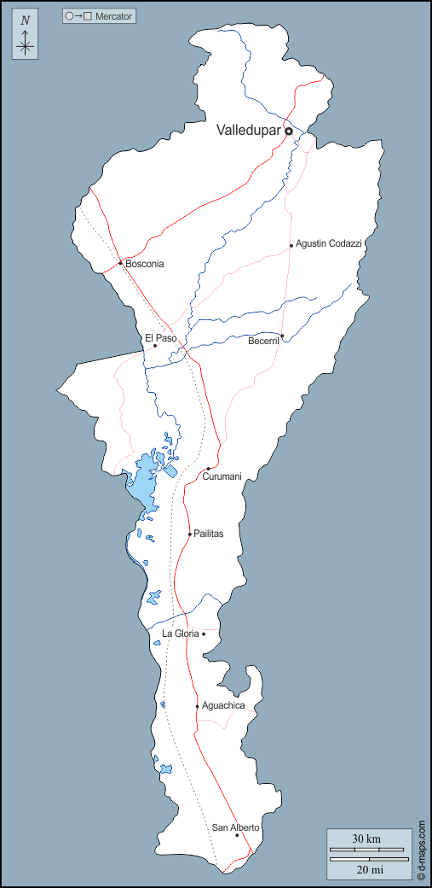

Cesar

Sitios turisticos Cesar
- Balneario Hurtado
- Parque de la Leyenda Vallenata
- La Mina de Valledupar
- Reserva Natural Serranía del Perijá
- El Río Badillo
Platos tipicos
- Arroz de cebolla
- Arroz de maiz
- Arroz de yuca
- Arroz de pescado
- Arroz de mariscos
Sector economico
El sector economico del Cesar se basa en la agricultura, la ganaderia y el turismo.